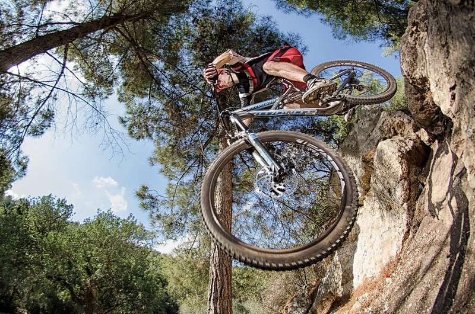
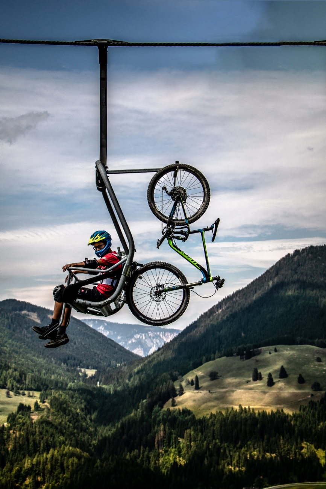

אנחנו בחברת bike trip מארגנים טיולי אופניים,
הטיול שלנו ייקח אותנו דרך כמה מהנופים עוצרי הנשימה באזור, מגבעות מתגלגלות ועד עמקים ציוריים, כל זאת תוך כדי פעילות גופנית ואוויר צח. תיכננו בקפידה את המסלול שלנו כדי להבטיח שנראה את המיטב ממה שיש לאזור להציע, תוך שמירה על בטיחות.
הטיול שלנו מתאים לרוכבי אופניים בכל הרמות, בין אם אתה מקצוען ותיק או רק בתחילת הדרך. יהיו איתנו מדריכים מנוסים בכל שלב בדרך כדי לוודא שאתה מרגיש בנוח ובטוח. לאורך הדרך, נעצור באטרקציות ונקודות עניין מקומיות, ונותן לכם הזדמנות ללמוד עוד על ההיסטוריה והתרבות העשירה של האזור.
אז למה אתה מחכה? בואו להצטרף אלינו למסע האופניים המדהים הזה. הירשמו עוד היום כדי לשריין את מקומכם!
דאגות ובעיות היום יום, יכולות ליגע אתכם ולהעלות את רמות הלחץ שלכם. גם הגוף וגם הנפש שלכם חשים לחץ זה. אז במקום לשקוע בלחץ, קחו את האופניים שלכם ותתחילו לדווש, אתם תרגישו כמעט באותו רגע את ההשפעה המרפאה. ככל שאתם נהנים יותר מהפעילות הגופנית שאתם עושים, כך אתם נפטרים מהלחצים במהירות רבה יותר. 
בנוסף לכך, ברגע שתגיעו לטבע ותשאפו אוויר נקי, אתם תחושו שיפור והקלה מידיים. סיבוב הדוושות פועל כמדיטציה. ריכוז מלא בזמן הפנייה ימינה, חוסם את כל המחשבות השליליות. רכיבה על אופניים היא באמת ובתמים קסם הגורם להקלה על לחץ וחרדות. 
לדעת סוציולוגים שונים האופניים תרמו לגיוון הגנטי של תושבי אזורים נידחים, בכך שאפשר להם להגיע בקלות למקום היישוב הקרוב ולהגדיל את "מעגל החיזור". בערים, סייעו האופניים להפחית את הצפיפות במרכזי הערים על כך שאפשרו לפועלים להתגורר בפרברים ולהגיע לעבודתם ביעילות ובמהירות. האופניים הפחיתו גם את התלות בסוס כאמצעי תחבורה. האופניים אפשרו גם לתושבי הערים לנסוע להנאתם במרחבי הכפר, זאת בזכות היותם של האופניים יעילים וחסכוניים באנרגיה הרבה יותר מהליכה ברגל ואף מהירים יותר .
רכיבה על אופניים היא אחד מענפי הספורט הבריאים ביותר. זאת מכיוון שבענפי ספורט אחרים כמו ריצה, הליכה וכו' נגרם זעזוע למערכת השלד. ברכיבה יש פחות עומס על המפרקים שנושאים את משקל גופנו, ולכן הסיכוי לפציעה במפרקים האלה נמוך יותר. הרכיבה מומלצת אם כך לסובלים מבעיות ברכיים, קרסוליים וכו.' עם זאת, יש לזכור שרכיבה בתנוחה לא נכונה או על זוג אופניים לא מותאם עלולה לגרום לכאבים ואף לפציעות .
רכיבה על אופניים היא פעילות אירובית שמערבת קבוצות שרירים גדולות, כשהבולטים בהם הם שריר הירך הקדמי (ארבע־ראשי), הירך האחורית, שריר העכוז ושרירי התאומים. רכיבה על אופניים מפעילה את מערכת הלב־ריאה (קרדיו־וסקולארית), ובכך יכולה להפחית את הסיכון למצבים כמו כולסטרול גבוה, שומני הדם, סוכרת, יתר לחץ דם ומחלות לב וכלי דם.